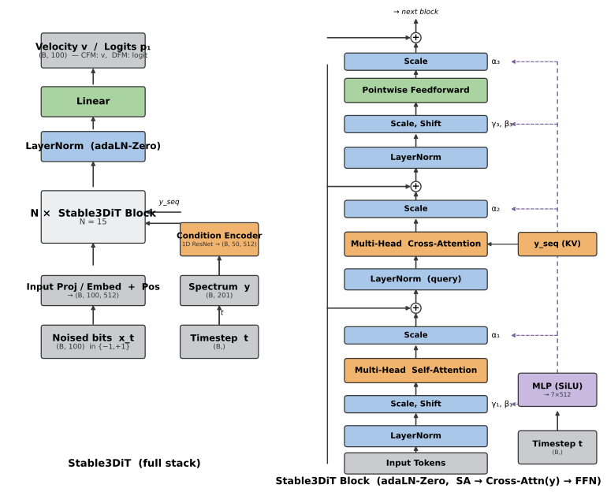

DiT + adaLN-Zero(timestep t) + Cross-Attention(스펙트럼 y). 왼쪽 = 전체 스택, 오른쪽 = 블록 내부(SA → Cross-Attn → FFN).

| 항목 | 값 / 처리 |
|---|---|
| 규모 | d_model=512 · 15 layers · 4 heads · ff=768 · dropout=0.1 — 총 76.84M params |
| 입력 x_t | (B, 100) binary {−1,+1} · grouped g4 → (B, 25, 4) |
| 스펙트럼 y | (B, 201) → Condition Encoder(1D ResNet ×3) → y_seq (B, 50, 512) → cross-attention KV |
| Timestep t | (B,) → sinusoidal(512) → MLP → 블록마다 adaLN MLP → 7×512 변조 (γ₁β₁α₁, α₂, γ₃β₃α₃) |
| 출력 head | CFM: Linear(512→1) velocity(또는 x̂₁) · DFM binary: Linear(512→1) logit→sigmoid=p₁ · DFM V=16: Linear(512→16) |
| adaLN-Zero | 변조 Linear zero-init → 초기 γ=β=α=0 → 블록 항등에서 학습 시작 |